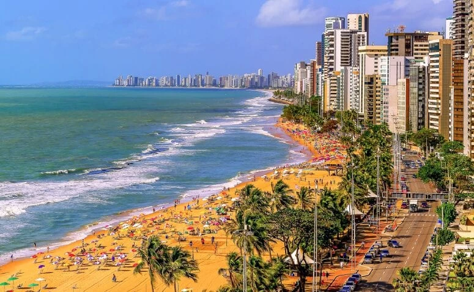

Opa, Nordeste!
As praias, o calor, a comida de sabores fortes e o povo acolhedor fazem dessa região do país uma das mais procuradas pelos turistas brasileiros e estrangeiros. Entre os destinos imperdíveis, está a capital de Pernambuco. Viajar para Recife no Carnaval é exatamente o que você estava procurando!
Uma explosão de cultura invade as ruas da capital pernambucana nessa época de festas. Assim como a vizinha, Olinda, Recife é famosa pelos bonecos gigantes, pelo frevo e pelas cores vibrantes. Mas não é só o Carnaval que chama a atenção na cidade: as praias são de tirar o fôlego!
Por isso, confira nosso texto com quatro vantagens de viajar para Recife e não perca a oportunidade de aproveitar o feriado nesse destino encantador!
1. Carnaval irresistível
O Carnaval de Recife é um dos mais populares do Brasil, conhecido por sua diversidade e atrações para todos os gostos. O evento oferece uma rica mistura de ritmos, incluindo axé, maracatu, frevo, samba e influências africanas. A programação abrange toda a semana de feriado e é cuidadosamente planejada pela cidade, apresentando shows de renomados artistas brasileiros, apresentações populares e desfiles.Além disso, a cidade de Olinda, vizinha a Recife, também oferece um Carnaval espetacular, com muito frevo, maracatu e os icônicos bonecos de Olinda que dão vida à tradição local. Turistas se juntam aos foliões e vivenciam um espírito festivo e alegre. Vale a pena considerar uma visita para o próximo Carnaval, pois a experiência promete ser inesquecível.
2. Ótimas opções de hospedagem
Em Recife, encontrar um hotel bom, econômico e próximo aos principais pontos turísticos não é um problema. O bairro de Boa Viagem é a principal região hoteleira da cidade, estendendo-se ao longo da costa da Praia de Boa Viagem, com uma ampla variedade de opções de hospedagem, desde hostels econômicos até hotéis cinco estrelas. Além disso, Boa Viagem é uma área animada por si só, com uma orla repleta de bares e restaurantes, um comércio movimentado e algumas atrações culturais locais, tornando-a uma escolha conveniente para os viajantes.
3. Praias
O litoral pernambucano é famoso por suas belas praias, e Recife, a capital do estado, possui algumas das mais procuradas do país, incluindo a Praia de Boa Viagem. A Praia do Pina também é uma opção popular, com areias bem cuidadas e água cristalina, perfeita para kitesurf. Recife tem a vantagem de estar perto de outras atrações, como a Praia da Piedade em Jaboatão dos Guararapes, a apenas 17 km de distância, e Porto de Galinhas, a cerca de 50 minutos de carro, um famoso destino com praias incríveis e um ambiente mais tranquilo durante a semana.
4. Fácil acesso
Por último, uma grande vantagem de viajar para Recife é o fácil acesso à cidade. No aeroporto — que fica a apenas 10 minutos de carro de Boa Viagem —, chegam voos diretos das principais capitais do país. O local é bem servido de táxis e o transporte público não deixa a desejar. Agora, se você quer economizar e, principalmente, viajar com segurança e comodidade, a melhor pedida é ir de ônibus. Existem linhas que partem de rodoviárias de todo o país. Imagine poder aproveitar a vista, na maior tranquilidade, e ainda guardar uma grana para os passeios. Demais, não é?
Principais pontos turísticos
Depois de você sabe alguns dos muito motivos para vim para recife vamos falar de lugares incríveis que você "deve" ir.